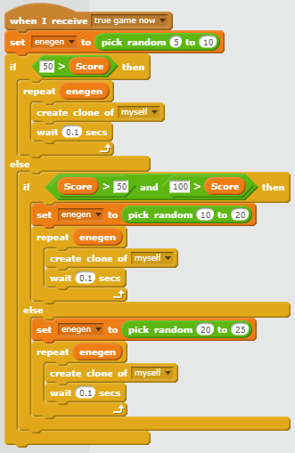

Portfolio
Undertale Rewritten
Try the game at https://scratch.mit.edu/projects/260584019/ or here!


Descrption
The game is set in the same universe as the base game of Undertale. The player is a little heart interacting with an evil flower. The goal of the game is to dodge as many of the "pellets" as possible. Every "pellet" dodged is equal to one point. The amount of pellets are randomly generated based on current score. The higher the player's score is, the difficulty gets harder up to a certain difficulty cap. The player loses once their character gets hit by any 1 "pellet"
Reflection
My partner and I created this game due to the popularity and our own enjoyment of undertale. We enjoyed the concept of a simple yet enjoyable bullet dodging game. The inspiration was of course the original game "Undertale." During development, two successful points were the creating of a circle using 50 different clones and being able to generate pellets randomly to add variation. Two obstacles were getting the music to function properly and getting the core mechanics of the game. If my partner and I had more time, we would probably add more depth to the game. We would want to possibly add a health system or more interaction with the boss itself.Important Algorithm
This is our algorithm that increases the difficulty of the game as the player's score increases. This is an algorithm because it defines steps that the game takes to decide how many objects to create. What this does is it checks what the current player's score is. Once it does that, it tries to see what range the players score is in and then clones a random number based on that range.
More Blocks